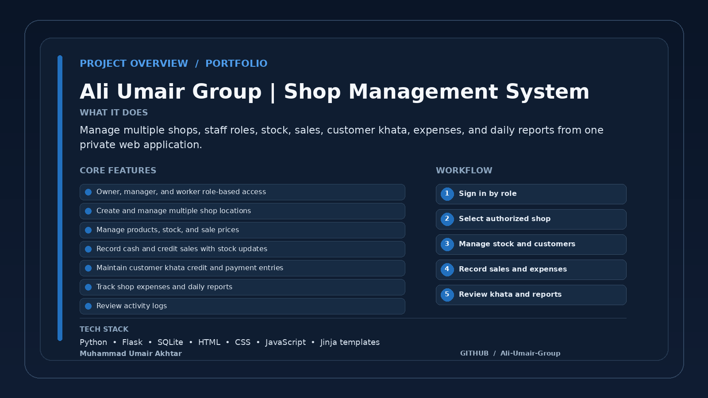

PROJECT 19 / PORTFOLIO
Ali Umair Group — Shop Management System
Manage multiple shops, staff roles, stock, sales, customer khata, expenses, and daily reports from one private web application.

Project Overview
Manage multiple shops, staff roles, stock, sales, customer khata, expenses, and daily reports from one private web application.
Key Features
- Owner, manager, and worker role-based access
- Create and manage multiple shop locations
- Manage products, stock, and sale prices
- Record cash and credit sales with stock updates
- Maintain customer khata credit and payment entries
- Track shop expenses and daily reports
- Review activity logs
- Responsive interface with Urdu layout preview
- Use PKR currency
Project Workflow
Sign in by role → Select authorized shop → Manage stock and customers → Record sales and expenses → Review khata and reports
Technologies Used
Scope & Notes
The Urdu toggle is a layout preview, not a complete translation. Reports show sales minus expenses, not net profit. Review security and production configuration before public deployment.
Explore the code.
The complete source code and project files are available in the GitHub repository.
Open GitHub ↗